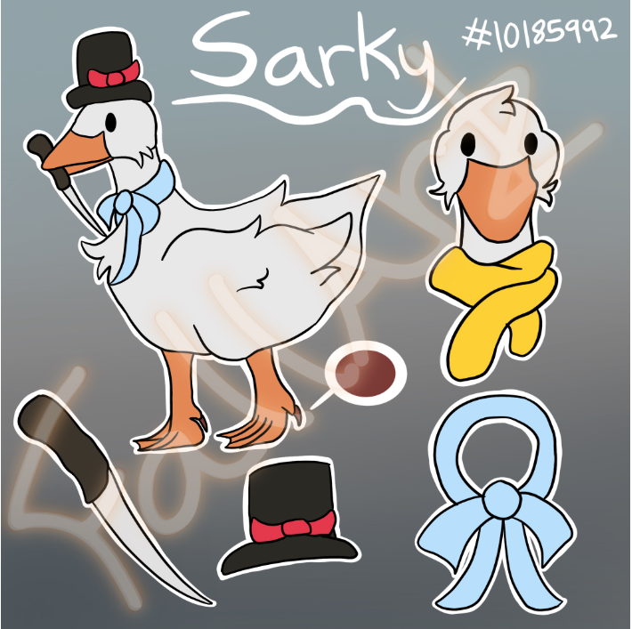

Sarky
A wild goose with a fierce heart. Upon first glance, it seems like no thoughts pass through Sarky's mind. This is not true. He is simply quiet, typically non-verbal.
When he has bonded with someone, he stays loyal to them forever. This involves possessing sharp objects to defend Fall. She does not appreciate this mindset and encourages him to live a peaceful life.
In the human realm, he is loved and cherished by many.